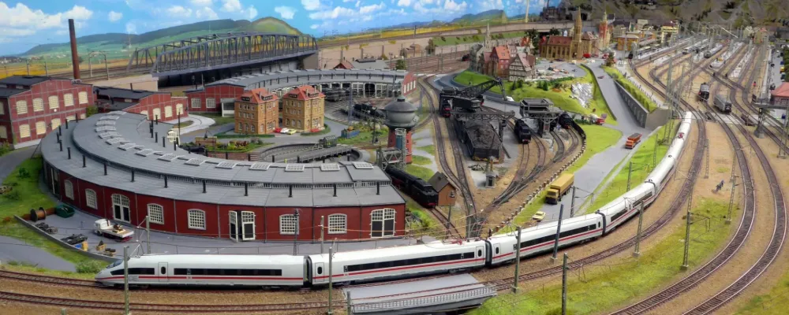
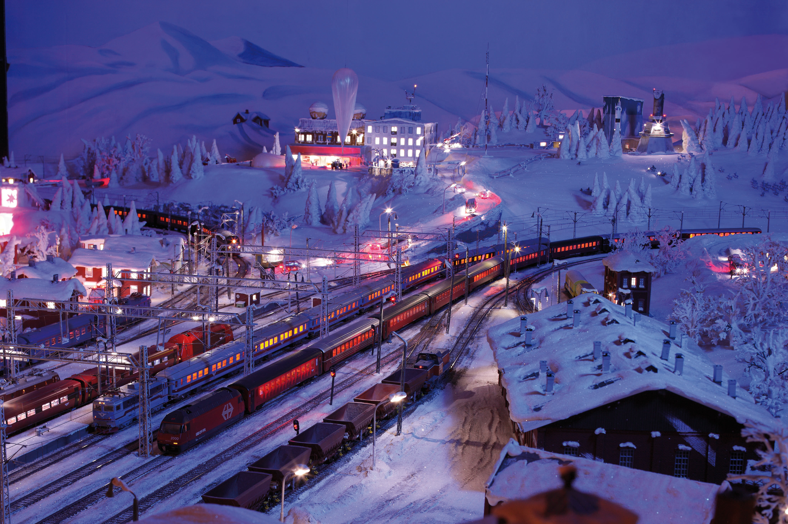
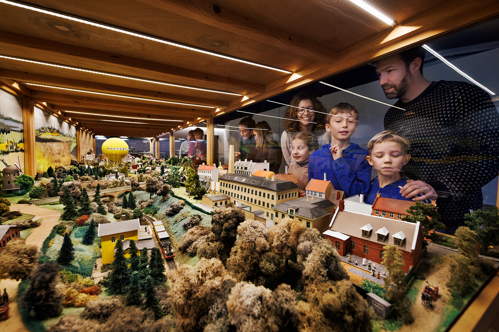
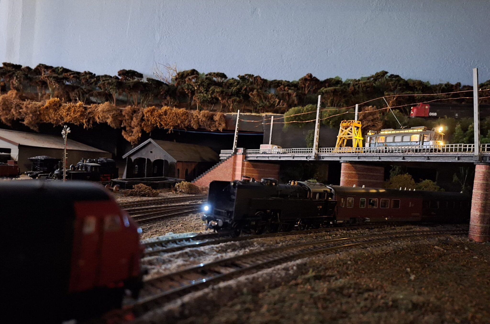
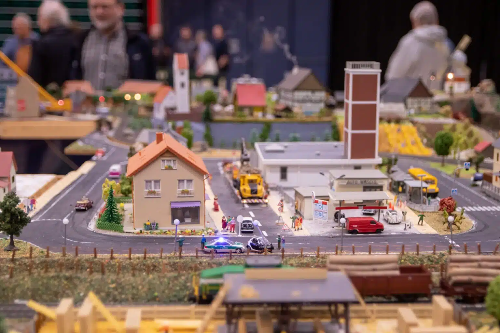
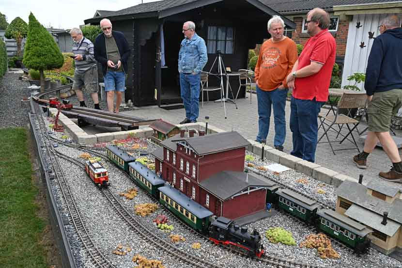

Søgeresultater

Næste udstilling
– DMJU by night

Hvem er vi?
Dansk Model Jernbane Union samler modeljernbaneentusiaster fra hele Danmark gennem fællesskab og en fælles passion for modeltog.
Unionen arrangerer hvert år den store udstilling “DMJU - By night”, hvor besøgende kan opleve imponerende modeljernbaner i forskellige størrelser, spændende aktiviteter og et stort udvalg af modeltog. Et samlingspunkt for både erfarne entusiaster og nysgerrige familier.

Modelbanedag
Se klubbernes anlæg i drift, og få en snak med dem, der har bygget dem.

DMJU Sneland
Oplev DMJU’s traditionelle vinterlandskab i fuld aktion.

Åbent hus
Kom tæt på togene og se hvordan klubben bygger spor og landskaber.
Medlem
I DMJU er der plads til alle. Alle med samme passion inde for modeltoge. I dag er der lidt over 180 klubber.
Dansk Model Jernbane Union har været en sammenslutning af modelbaneklubber i Danmark siden 1961, vi afholder udstillinger i Danmark, DMJU formål er at udbrede viden om hobbyen, samt at samle forhandler, klubber og privat personer.
Kommende udstillinger
Se modelbaner i drift og mød klubberne bag dem

Fotokonkurrencen 2025
Deltag og vind gode gavekort til modeljernbanen.
I år er temaet: ”Under broen”

Billede 1:
Foto taget af:
Steen Svendsen
Klub: Odense Model Jernbane Klub
Se i fuld størrelse (billede 1)
Billede 2:
Foto taget af:
Henning Hansen
Klub: Farum Model Jernbane Klub
Se i fuld størrelse (billede 2)
Billede 3:
Foto taget af:
Henning Hansen
Klub: Farum Model Jernbane Klub
Se i fuld størrelse (billede 3)
DMJU Fotokonkurrence 2025
DMJU
Nyheder fra DMJU og modeljernbaneklubberne
Fremhævet nyhed

En snak om modeltog
Ved standen kan besøgende bladre i modeljernbaneblade og få en snak om modeltog, anlæg og klubliv.
Seneste nyheder

En by fuld af små detaljer
Mellem husene, vejene og skinnerne er der masser at gå på opdagelse i. Kig godt efter de små scener langs banen.

Modelbaner fylder hallen
Fra lange godstog til små stationsbygninger. I hallen kan besøgende gå fra anlæg til anlæg og se, hvordan landskaber og spor er bygget op.

Modeltog under åben himmel
På havebanen snor skinnerne sig forbi små bygninger og grønne bede. Her kan besøgende følge togene helt tæt på.
Hjælpevognen
Opgørelsen for det sidste år er kommet, perioden løber fra sep. til sep. det udbetalt beløb i 26 kom op på 2508,09 kr, så det samle beløb på kontoen er nu oppe på 3922,38 kr.
DMJU har indgået en sponsoraftale med OK, så du kan støtte Dansk Model Jernbane Union, hver gang du tanker. Og vigtigst af alt, det koster dig ikke ekstra at støtte vores forening – OK betaler hele beløbet.
Du støtter vores forening med 5 øre/liter – uanset om du bestiller et OK Kort eller betaler med OK-appen. Når nye kunder har tanket 500 liter indenfor et år, får vores forening en ekstra bonus på 200 kr.
Bestil dit OK kort
Bestil et OK Kort på www.ok.dk/lokalsporten. Hvis du vælger at tanke med OK-appen, så finder du den i App Store eller Google Play.
Har du allerede et OK Kort? Så ring til OK på 70 10 20 33 og fortæl dem, at du gerne vil støtte Dansk Model Jernbane Union nu. Og så sørger de for at ændre det.

Støt ekstra med OK El
Har du et OK Kort kan du fordoble støtten til vores forening. Med el fra OK kan du støtte med 5 øre ekstra pr. liter, hver gang du tanker. Det er nemt og hurtigt at skifte elselskab.

Kontakt
Bare ring til OK på 70 10 20 33, så sørger de for det hele.
Har du spørgsmål, er du velkommen til at kontakte Willy Nielsen på 22271777 eller kasserer(@)dmju.dk.
Hvordan virker det?
DMJUs aftale med OK løber fra Oktober 2024 til Oktober 2025, hvor vi så vil vide hvor mange penge der er indløbet på vores konto, fra første Januar 2026 vil vores Hjælpevogn kunne uddele midler til klubber.
Hjælpevognen er en måde hvor man med et OK benzin kort eller app, kan støtte klubber under DMJU.
Alle støtte kroner som kommer fra OK eller andre sponsere vil gå til klubber, er en klub af en eller anden grund i nød, kan de søge om midler ved DMJU som vil ser på sagen. En gang om året vil man se hvor mange midler som der er i Hjælpevognens kasse, DMJU vil man vurdere hvor mange midler der kan udles til alle klubber under DMJU, alle klubber vil få tildelt det samme beløb.
Det er ikke alle medlemmer som har et OK kort, men som sikker gerne vil støtte Hjælpevognen, det kan nu gøres på en Mobilpay konto til samme formål, alle beløb om det er 5 kr. eller mere skal være velkommen, og vi siger tak på forhånd, har man spørgsmål til ting omkring Hjælpevognen så kontakt kassereren.
Mobilpay konto: #87710 eller brug QR koden.Husk på at ingen kontingenter til DMJU fra klubber, vil ikke gå til Hjælpevognen.

Støtte
Der er 2 muligheder for støtte:
- Støtte til nødlidende klubber
- Støtte til andre klubber
Ad 1: Kommer en klub i økonomisk bekneb i forbindelse med f.eks. en vandskade, kan der ansøges om et engangstilskud (her kan det drøftes om der skal ansøges om et konkret beløb eller om der ydes tilskud efter en bedømmelse fra DMJU) alle ansøgninger vil blive drøfte på det først kommende bestyrelsesmøde i DMJU.
Ad 2: Her søges tilskud efter de gængse normer for sponsorater fra almennyttige fonde, dvs. at klubberne kan fremsende en ansøgning om støtte, som derefter tildeles efter afgørelse fra DMJU. Beløbets størrelse afgøres suverænt af DMJU og kan til enhver tid afvige fra det beløb, som måtte være angivet i ansøgningen.

Historien bag DMJU
Den 09. april 1961 blev Dansk Model Jernbane Union i dagligt tale kaldt DMJU, stiftet på en generalforsamling med det formål er at fremme samarbejdet mellem alle danske modeljernbaneklubber og at fremme interessen for modeljernbane hobbyen generelt. DMJU har siden vokset sig til i dag at repræsentere 105 klubber fordelt på alle størrelser og drift type og som samt hvert år afholder Danmarks største modeltogs udstilling.
Et tilbageblik om stiftelsen af dmju og morop
Poul Erik Clausen, der var næstformand i DMJK, fremsatte i 1950 på DMJKs generalforsamling, sammen med Poul Erik Harby, nogle ret vidtrækkende forslag hvoraf det ene gik ud på, at DMJK skulle søge kontakt med landets andre MJ klubber med henblik på dannelse af en fælles Union. Dette forslag kom ikke til realitets drøftelse på generalforsamlingen som følge af en heftig debat om andre emner, men Clausen opgav ingen lunde tanken om et nærmere samarbejde mellem klubberne
På DMJKs ekstraordinære generalforsamling den 8. maj 1950, blev Clausen valgt til formand for DMJK, en post som han varetog på forbilledlig vis indtil sin alt for tidlige død den 27. juli 1959, få dage efter afslutningen af den 1. MOROP-kongres i Danmark. Denne internationale sammenslutning af MJ-klubber (nu også af klubber fra andre jernbane interesserede) er faktisk en videreførelse af større sammenhæng af UNION tankerne fra 1950. Sådanne tanker gærede nemlig også i andre lande, hvilket gav sig udslag i, at der bliver afholdt internationale MJ konferencer i Rüdesheim i 1952 og i München 1953. Fra Dansk side deltog blandt andet Clausen og *James Steffensen i disse konferencer, da det var besluttet, at man ved næste konference i Genua i eftersommeren 1954, ville stifte en international sammenslutning, udsendte DMJK i juni 1954 en rundskrivelse til andre danske MJ klubber, hvori det foresloges, at de danske MJ klubber skulle tilslutte sig den internationale sammenslutning, idet DMJK indtil videre ville være villige til at fungere som sekretariat og mellemled. Syv af de 9 tilskrevne klubber accepterede forslaget, og ”Danske model jernbane klubber”. DMK kom herved til at stå som medstifter af MOROP. Reelt var det Clausen personligt, der indtil sin død fungerede som sekretariat og mellemled, idet hans talrige tjenesterejser bragte ham rundt i hele landet, hvilket gav ham gode muligheder for hyppig kontakt med provins-klubberne. Samarbejdet mellem de danske MJ-klubber fortsatte på det beskrevne løse grundlag i hele 7 år, og først i 1961 blev Clausen og Harbys oprindelige unionstanke fra 1950 virkelig gjort ved stiftelsen af det, der i dag hedder Dansk Model jernbane Union, forkortet DMJU.
*James Steffensen var én af medstifterne af MOROP og deltog i mange år i MOROPs arbejde med udviklingen af NEM normerne.
James Steffensen blev udnævnt til æresmedlem i MOROP. Ligeledes var han æresmedlem i DMJK indtil sin død i 1988.
Den hjemmeside du besøger lige nu er den primære kommunikations linie mellem DMJU, medlemsklubberne og offentligheden – det er her nyhederne først læses og kommende events offentliggøres, og det er her du finder alle praktiske oplysninger om modeljernbanehobbyen i Danmark og udlandet. Og det er også her du finder kontakt info til alle de mere end 105 modeljernbaneklubber der er medlem af DMJU.
DMJU er den officielle sammenslutning af modeljernbaneklubber i Danmark, og blev stiftet i 1961. DMJU’s formål er at fremme samarbejdet mellem alle danske modeljernbaneklubber og at fremme interessen for modeljernbane hobbyen generelt.
DMJU er medlem af den europæiske sammenslutning MOROP (Union Européenne des ModélistesFerroviaires et des Amis des Chemins de Fer)), der har hovedsæde i Bern i Schweiz, og deltager så aktivt som muligt i det internationale samarbejde. DMJU har for nylig taget initiativ til et tættere samarbejde mellem de nordiske lande, og forhandlinger om dette fortsætter i 2015.
I marts måned 1994 arrangerede DMJU for første gang modeljernbane udstilling i “DSB-Kursuscenter Østerport” i København. Siden er det blevet til en række udstillinger, der afholdes skiftevis øst og vest for Storebælt. De sidst afholdte har været i Køge (nu Taastrup) og Sydbank Arena (Kolding). Der arbejdes hele tiden på, at gøre udstillingerne bedre og bedre og vise dansk modeljernbane. Et af de faste indslag er en diorama konkurrence. Som inspiration inviteres gerne et udenlandsk anlæg til at deltage i udstillingen. Det er således den 29. DMJU udstilling der åbner næste gang i Vejle marts 2026. Du kan finde flere oplysninger under menu punktet ’udstilling’.
Da interessen i Danmark i udtalt grad er for at køre med modeller af danske tog, afholder DMJU en afstemning blandt medlemmerne om ”Årets model” for at fremme interessen for at producere til det danske marked. Der er flere kategorier, men alt handler om danske tog og dansk tilbehør. De vindende producenter får et flot diplom som tegn på æren.
Nye tiltag vil sikkert se dagens lys fremover, således at DMJU fortsat ses som en aktiv, nyttig og fornyende forening til fremme af danske modeljernbaneklubbers og entusiasters interesser.